タンボーディーパゴダ
ThanboddhayPagoda
驚愕のデコレート寺院。
ここにある仏像は全部で60万体近く。尋常な数ではない。
まさにファンキーブッダエクスペリエンス。
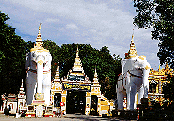
入り口。でかい象さんがお出迎え。
これから始まるファンキーブッダパーティーを如実にもの語っている。
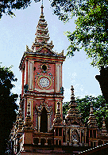
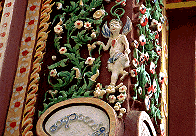 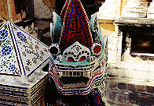 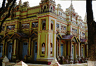
門を潜るといきなり現われる色・色・色の大洪水。
日本の坊さんが見たら腰抜かしそうな色使い。
この国に来て派手な寺に慣れてきた筈の私も思わず仰天。
これほど装飾的な寺があってよいものだろうか。→いや、よいのだ。もっとやれやれ〜。
デザインモティーフも古今東西何でもアリアリ。
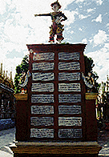
各国語の案内版。日本語はないがこんな辺鄙なところに外国からの観光客などどのくらい来るというのだろうか。
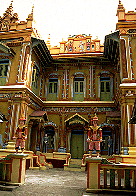 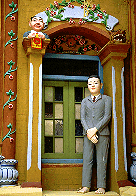 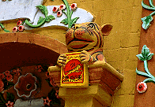
で、最初に現れてくるのは「胡文虎捐賑醫院」。
なぜ病院が・・・という疑問よりも先に、お寺がこんな派手なのもナンだけど、病院がコレでいいのか！という思いが先に浮かぶ。
入り口の虎さん、勿論手に持つはタイガーバーム。
で、メインのパゴダへ。
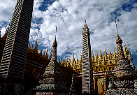 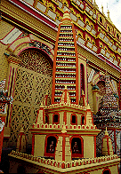 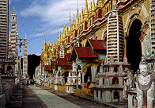
考えられる限りのありとあらゆる様式のパゴダが並ぶ。
ここのパゴダは他のパゴダの様式から大きくかけ離れている。
珍寺天国のミャンマーの人が見ても変だと思うに違いない。
まるでお菓子の城のようだ。
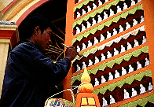 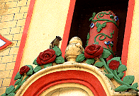
ペンキ塗りのお兄さん。このパゴダを世界最強装飾寺院にするべく日々鍛練を重ねている、の図。
近くではリスが走り回っている。
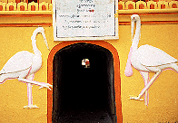
仏塔中央部を東西に貫く謎のトンネル。ビルマ式戒壇巡りか。
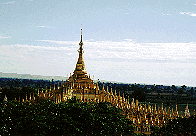
上の方はこんな感じ。ひとつひとつの小仏塔にも仏像が納まっている。
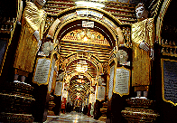 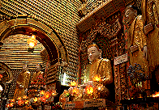
内部。
外部のおちゃらけた感じはなくスペーシーである。迷子になりそうな位同じ間取りの部屋が続く。
壁をみると細かい仏像がびっしりと並んでいる。
この辺で数十万体稼いでいるのかあ。
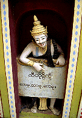
案内なのか説教なのかメッセージを掲げている妙な人々で溢れている。
ちょっとした窪みに生息しているので油断ならない。
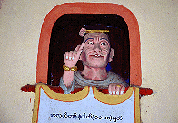 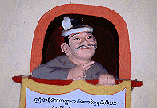
八百屋さんと肉屋さんもエキストラで友情出演（ウソ）。
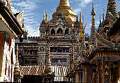 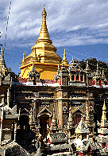
パゴダ内はず〜っとこんな感じである。
もはや暴力の域に達しようか、という位の重度の過飾症である。
暴力的な装飾という意味じゃあないよ。
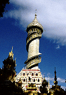
螺旋階段を持つ塔。
上から見るとこのパゴダの全容が見て取れ、あらためてその過剰具合にお腹が一杯になってくる。
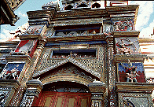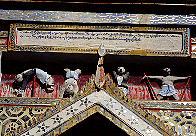
宝石箱のような建物。しかしダークな装飾も忘れない。
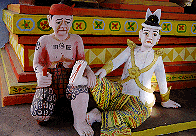
過剰な色と装飾のパラダイスガーデン。
こんな楽しい寺があっていいのか。→いや、よいのだ。もっとやれやれ〜。
ファンキーにしてファンシー。
まさに仏教テーマパークの王道なり。
次はバガンだ！
ミャンマーパゴダ列伝のページへ
珍寺大道場 HOME